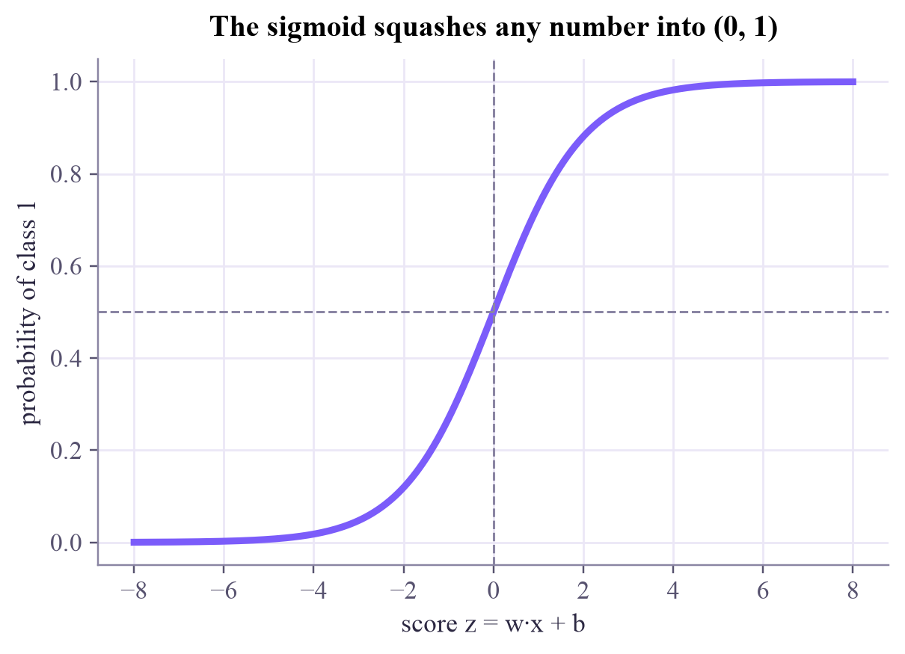
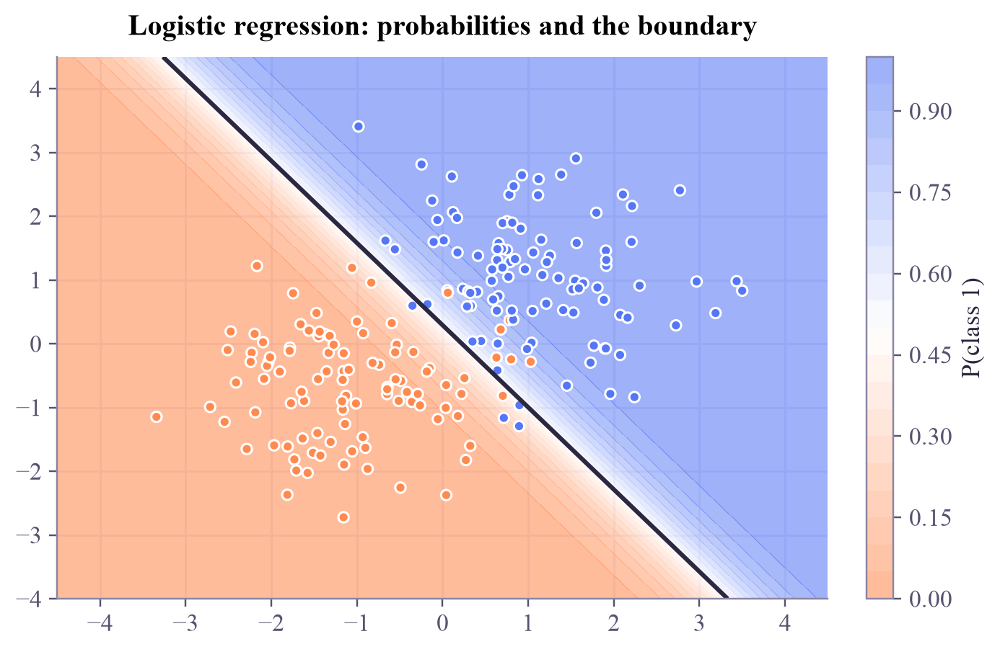

sigmoid(-4), sigmoid(0), sigmoid(4) = [0.018 0.5 0.982]
A line that scores each point, a sigmoid that turns the score into a probability, and a loss that punishes confident mistakes.

This week the answers become categories: spam or not, malignant or benign. A weather app that only says "rain" or "no rain" is less useful than one that says "70% chance of rain", and the same is true for classifiers: a probability tells you how sure the model is. Logistic regression, despite its name, is the classic classifier that gives probabilities. It is also the simplest neural network: one neuron.
1. Score. A linear function gives each point a score: . Points far on one side get big positive scores, far on the other side big negative ones.
2. Squash. The sigmoid turns any score into a number between 0 and 1:
We read as the probability of class 1. We predict class 1 when , that is when . The set where is a straight line, so the decision boundary is straight. The size of sets how sharp it is: a big means the probability jumps from 0 to 1 over a short distance (a confident model).
3. Score the probabilities. MSE is a poor fit for probabilities. Instead we use cross-entropy (log loss):
If the true class is and the model says , the loss is small (). If it confidently says , the loss is huge (). Confident mistakes hurt most. We minimize the average loss with gradient descent, exactly like last week. (Tomorrow's lesson is all about this loss.)
Turn the boundary, shift it, and change how steep the sigmoid is. The background shows the probability. Then press Train to let gradient descent take over.
Line up the boundary well, then crank the steepness to the maximum. Accuracy stays the same but cross-entropy goes up: the few misclassified points are now confident mistakes. The best model is sharp, but not too sharp.
ml-w3d1.ipynb. To change the code and run it yourself, open the notebook in Google Colab (free, in your browser) or download it for your own Jupyter.import numpy as np
import matplotlib.pyplot as plt
def sigmoid(z):
return 1 / (1 + np.exp(-z))
z = np.linspace(-8, 8, 200)
plt.plot(z, sigmoid(z), color="#7b5cfa", lw=3)
plt.axhline(0.5, color="#8a85a3", ls="--", lw=1)
plt.axvline(0, color="#8a85a3", ls="--", lw=1)
plt.xlabel("score z = w·x + b")
plt.ylabel("probability of class 1")
plt.title("The sigmoid squashes any number into (0, 1)")
plt.show()
print("sigmoid(-4), sigmoid(0), sigmoid(4) =", sigmoid(np.array([-4, 0, 4])).round(3))
sigmoid(-4), sigmoid(0), sigmoid(4) = [0.018 0.5 0.982]
import torch
from sklearn.datasets import make_blobs
torch.set_num_threads(1)
X, y = make_blobs(n_samples=200, centers=[(-1.2, -0.6), (1.0, 0.9)], cluster_std=0.9, random_state=4)
Xt = torch.tensor(X, dtype=torch.float32)
yt = torch.tensor(y, dtype=torch.float32).reshape(-1, 1)
torch.manual_seed(0)
model = torch.nn.Linear(2, 1)
loss_fn = torch.nn.BCEWithLogitsLoss()
optimizer = torch.optim.SGD(model.parameters(), lr=0.5)
for step in range(201):
optimizer.zero_grad()
loss = loss_fn(model(Xt), yt)
loss.backward()
optimizer.step()
if step % 50 == 0:
print(f"step {step:3d}: cross-entropy = {loss.item():.3f}")
with torch.no_grad():
accuracy = ((model(Xt) > 0).float() == yt).float().mean().item()
print(f"training accuracy = {accuracy:.3f}")step 0: cross-entropy = 0.589 step 50: cross-entropy = 0.134 step 100: cross-entropy = 0.123 step 150: cross-entropy = 0.119 step 200: cross-entropy = 0.118 training accuracy = 0.950
from matplotlib.colors import LinearSegmentedColormap
apricot_blue = LinearSegmentedColormap.from_list("apricot_blue", ["#ff8a50", "#ffffff", "#5577f5"])
xx, yy = np.meshgrid(np.linspace(-4.5, 4.5, 200), np.linspace(-4, 4.5, 200))
grid = torch.tensor(np.c_[xx.ravel(), yy.ravel()], dtype=torch.float32)
with torch.no_grad():
p = torch.sigmoid(model(grid)).reshape(xx.shape).numpy()
fig, ax = plt.subplots(layout="constrained")
filled = ax.contourf(xx, yy, p, levels=20, cmap=apricot_blue, alpha=0.6)
ax.contour(xx, yy, p, levels=[0.5], colors="#2c2842", linewidths=2)
ax.scatter(X[:, 0], X[:, 1], c=np.where(y == 0, "#ff8a50", "#5577f5"), s=22)
fig.colorbar(filled, ax=ax, label="P(class 1)")
ax.set_title("Logistic regression: probabilities and the boundary")
plt.show()
from sklearn.linear_model import LogisticRegression
clf = LogisticRegression().fit(X, y)
print("weights:", clf.coef_.round(3), " bias:", clf.intercept_.round(3))
print("accuracy:", clf.score(X, y))
print("P(class 1) at the point (0, 0):", clf.predict_proba([[0.0, 0.0]])[0, 1].round(3))weights: [[2.428 1.899]] bias: [-0.566] accuracy: 0.95 P(class 1) at the point (0, 0): 0.362
The breast-cancer dataset describes 569 tumours with 30 measurements each, labeled malignant or benign. The split and the standardizing are done for you (with the training set's mean and spread only: no leakage). Build a logistic regression with 30 inputs in PyTorch, train it, and report the test accuracy.
from sklearn.datasets import load_breast_cancer
from sklearn.model_selection import train_test_split
data = load_breast_cancer()
Xtr, Xte, ytr, yte = train_test_split(data.data, data.target, test_size=0.25, random_state=0, stratify=data.target)
mu, sd = Xtr.mean(axis=0), Xtr.std(axis=0) # fitted on the training set only (no leakage!)
Xtr_t = torch.tensor((Xtr - mu) / sd, dtype=torch.float32)
Xte_t = torch.tensor((Xte - mu) / sd, dtype=torch.float32)
ytr_t = torch.tensor(ytr, dtype=torch.float32).reshape(-1, 1)
yte_t = torch.tensor(yte, dtype=torch.float32).reshape(-1, 1)
torch.manual_seed(0)
model = None # TODO: a linear layer with 30 inputs and 1 output
# TODO: a BCEWithLogitsLoss, an SGD optimizer (lr = 0.1), and 300 training steps on (Xtr_t, ytr_t)
if model is not None:
with torch.no_grad():
print(f"test accuracy = {((model(Xte_t) > 0).float() == yte_t).float().mean().item():.3f}")Copy cell 2's model, loss, optimizer and loop; only torch.nn.Linear(30, 1) and the tensor names change.
torch.manual_seed(0)
model = torch.nn.Linear(30, 1)
loss_fn = torch.nn.BCEWithLogitsLoss()
optimizer = torch.optim.SGD(model.parameters(), lr=0.1)
for step in range(300):
optimizer.zero_grad()
loss = loss_fn(model(Xtr_t), ytr_t)
loss.backward()
optimizer.step()
with torch.no_grad():
test_acc = ((model(Xte_t) > 0).float() == yte_t).float().mean().item()
print(f"PyTorch test accuracy = {test_acc:.3f}")
print(f"scikit-learn test accuracy = {LogisticRegression(max_iter=1000).fit((Xtr - mu) / sd, ytr).score((Xte - mu) / sd, yte):.3f}")
w = model.weight.detach().numpy().ravel()
top = np.argsort(-np.abs(w))[:3]
print("most influential measurements:", ", ".join(f"{data.feature_names[i]} ({w[i]:+.2f})" for i in top))PyTorch test accuracy = 0.958 scikit-learn test accuracy = 0.958 most influential measurements: worst concave points (-0.80), mean perimeter (-0.65), worst perimeter (-0.64)
A measured qubit naturally gives a probability between 0 and 1, so it can play the role of the sigmoid. The simplest quantum classifier rotates a qubit by an angle that depends on the input and reads off . In the Quantum ML tutorial you will train exactly that, with this same cross-entropy loss.
ISLP section 4.3 (logistic regression), with a worked example on credit-card default. Its section 4.3.5 extends it to more than two classes, which is tomorrow's topic.
Next in Machine Learning: cross-entropy and softmax, the loss behind almost every classifier, and what to do with more than two classes.

Tap the button to save it. Short and steady wins.
Marked by mistake? Undo